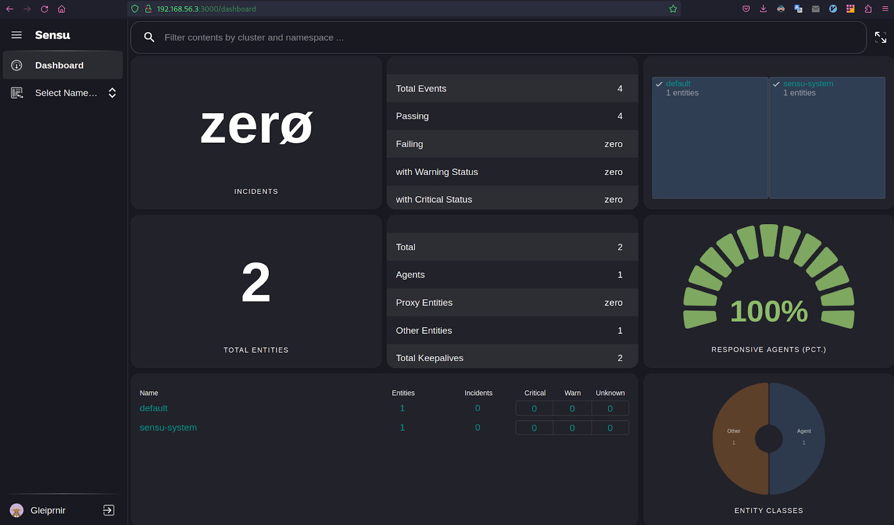
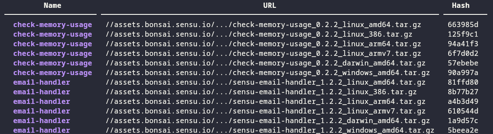
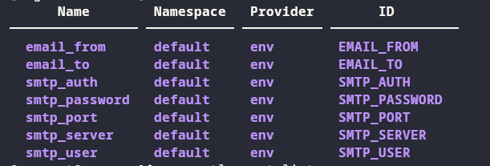
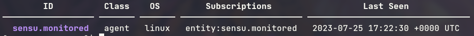
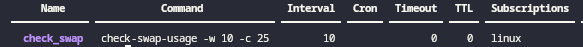
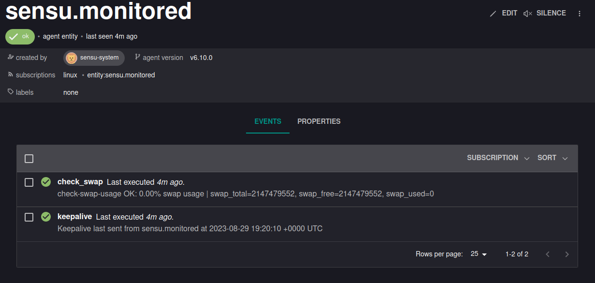
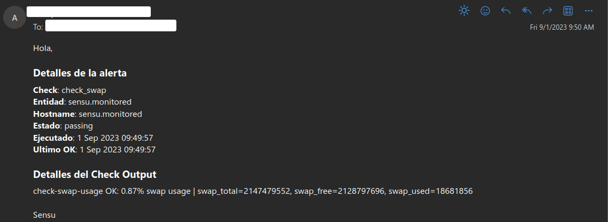

Sensu Go
This documentation page describes the step-by-step process of setting up a monitoring environment using Sensu Go and Rocky Linux 8 as the operating system. This guide will take you through the entire installation and configuration process.
Sensu Go [1] is an agent-based monitoring system, with a backend that gives flexibility. It uses service checks to monitor service health and collect telemetry data. It also has a number of well defined APIs for configuration, external data input, and to provide access to Sensu Go’s data.
Installation of Sensu Backend
Sensu Backend is the service that will check the requests and observability data [2]. With this service, we wil check and manage all the events created by the machines we need to monitor.
To install sensu-backend, we will need to update the repositories if it is possible. To do this we use the following commands:
$ sudo yum check-update -y $ sudo yum update -y
Then, we can add the rpositories needed to install sensu-backend:
$ curl -s https://packagecloud.io/install/repositories/sensu/stable/script.rpm.sh | sudo bash $ sudo yum install sensu-go-backend -y
Configuration and initialization
The sensu-backend configuration can be done using a yml file called backend.yml
located at /etc/sensu/.
We can create our own file, but Sensu provides a template that will be enough for our goal. To download it we can use the following command:
$ sudo curl -L https://docs.sensu.io/sensu-go/latest/files/backend.yml -o /etc/sensu/backend.yml
With this, sensu-backend will be ready. We only need to start and enable the sensu service as follows:
$ sudo systemctl start sensu-backend $ sudo systemctl enable sensu-backend
Then we can check if it was succesfully started:
$ sudo systemctl status sensu-backend
After starting the sensu-backend, we can use sensu-backend init to set a username
and password:
$ export SENSU_BACKEND_CLUSTER_ADMIN_USERNAME=<username> $ export SENSU_BACKEND_CLUSTER_ADMIN_PASSWORD=<password> $ sensu-backend init
Finally, to manage sensu-backend, Sensu provides a package called sensuctl, to
install it we do as follows:
$ curl https://packagecloud.io/install/repositories/sensu/stable/script.rpm.sh | sudo bash # to add the repository $ sudo yum install sensu-go-cli -y
And we log in with the credentials we set earlier:
$ sensuctl configure -n \ --username 'username' \ --password 'password' \ --namespace default \ --url 'http://127.0.0.1:8080' #this is the default url
To use the Sensu Go Web UI we can access http://127.0.0.1:3000 or the ip of the machine that hosts sensu-backend:
Installation of Sensu Agent
The Sensu Agent [3] is the client that runs in the machine you want to monitor. This agents will be the ones creating the events and checks we need to monitor them and generate the metrics and alerts.
In order to install sensu-agent in the machine we want to monitor, we can update if it’s possible and then add the neccessary repositories with the following command:
$ curl -s https://packagecloud.io/install/repositories/sensu/stable/script.rpm.sh | sudo bash
Then we install sensu-agent:
$ sudo yum install sensu-go-agent -y
Configuration and initialization
To run sensu-agent, we will need a configuration yml file called agent.yml
located at /etc/sensu/. We can get a template using this command:
$ sudo curl -sL https://docs.sensu.io/sensu-go/latest/files/agent.yml -o /etc/sensu/agent.yml
In order for sensu-agent to connect to sensu-backend, whe need to edit this file, for
that we can use vi:
$ sudo vi /etc/sensu/agent.yml
Uncomment the lines that contain sensu-backend machine url:
backend-url: - "ws://<sensu-backend-IP>:8081"
Replace <sensu-backend-IP> with your sensu-backend IP.
To run sensu-agent, it can be done as follows:
$ sudo systemctl enable --now sensu-agent
Then we can check if it was succesfully started:
$ sudo systemctl status sensu-agent
There are cases in which sensu-agent won’t start succesfully with no apparent reason. If it doesn’t start, you can check if there was an error with the following command:
$ journalctl -u sensu-agent
And if there is no problem and it still doesn’t start you can start it in the background with this command and use a script to start it automatically:
$ sudo sensu-agent start &
Or with a logfile:
$ sudo sensu-agent start > sensu_agent_log 2>&1 &
Send email notifications with Sensu
To send email notifications with Sensu, we will need to configure a pipeline. Pipelines are Sensu resources composed of observation event processing workflows made up of filters, mutators, and handlers [4].
To send the email alerts, we will use “Sensu Email Handler” [5], which will provide us with a handler for events generated in sensu-backend by sensu-agent. In this case, we will configure it for the swap memory check and the keepalive event.
First, we will need to go the the machine that hosts sensu-backend and register the the email handler with the following command:
$ sensuctl asset add sensu/sensu-email-handler:1.2.2 -r email-handler
We can check if it was registered with this command:
$ sensuctl asset list
And it should look like this:
Event Filter
After we got the handler, first thing we have to do is to create an event filter so that alerts can’t be repeated. This filter will send the alerts only when they change state (Any change from 0 OK, 1 Warning, and 2 Critical). [6]
To create the filter we define it using a yaml file with as follows:
type: EventFilter api_version: core/v2 metadata: annotations: null labels: null name: state_change_only namespace: default spec: action: allow expressions: - event.check.occurrences == 1 runtime_assets: []
- With this file we can create the filter using
sensuctl: $ sensuctl create -f eventFilter.yml # or you yaml file name
Secret definition
To use the email handler, we will need an SMTP and the following information:
Sender’s email
Destination Email
SMTP Server
SMTP Server Port
SMTP Server User
SMTP Server Authentication Type
SMTP Server Password
This is sensitive data that we do not want to have exposed to all users who have access to the backend, so it is necessary to save it. To do this, Sensu has a secrets provider called env. In which we can save this data as environment variables.
First we must create the file from which sensu-backend is configured to read the
environment variables by default, this file should be called sensu-backend and
located at /etc/sysconfig/:
EMAIL_FROM=<emai_from> EMAIL_TO=<email_to> SMTP_SERVER=<smtp_server> SMTP_PORT=<smtp_port> SMTP_USER=<smtp_user> SMTP_AUTH=<smtp_auth> SMTP_PASSWORD=<smtp_password>
With this set, we can now define the secrets. For this, we’ll create a yaml file to link every secret with an environment variable of the ones we defined earlier:
--- type: Secret api_version: secrets/v1 metadata: name: email_from spec: id: EMAIL_FROM provider: env --- type: Secret api_version: secrets/v1 metadata: name: email_to spec: id: EMAIL_TO provider: env --- type: Secret api_version: secrets/v1 metadata: name: smtp_server spec: id: SMTP_SERVER provider: env --- type: Secret api_version: secrets/v1 metadata: name: smtp_port spec: id: SMTP_PORT provider: env --- type: Secret api_version: secrets/v1 metadata: name: smtp_user spec: id: SMTP_USER provider: env --- type: Secret api_version: secrets/v1 metadata: name: smtp_auth spec: id: SMTP_AUTH provider: env --- type: Secret api_version: secrets/v1 metadata: name: smtp_password spec: id: SMTP_PASSWORD provider: env
And we create the secrets:
$ sensuctl create -f secretsCreation.yml # or you yaml file name
To check if this was succesful use this command:
$ sensuctl secret list
It should look like this:
Configure Email Handler
After you made the filter and secrets definition, you’ll need to create an email handler, which will take the address of the email receiver and the SMTP information from the secrets we defined earlier. The email handler definition would look like this:
api_version: core/v2 type: Handler metadata: namespace: default name: email spec: type: pipe command: sensu-email-handler -T /etc/sensu/email_template -f $EMAIL_FROM -t $EMAIL_TO -s $SMTP_SERVER -P $SMTP_PORT -u $SMTP_USER -a $SMTP_AUTH -p $SMTP_PASSWORD secrets: - name: EMAIL_FROM secret: email_from - name: EMAIL_TO secret: email_to - name: SMTP_SERVER secret: smtp_server - name: SMTP_PORT secret: smtp_port - name: SMTP_USER secret: smtp_user - name: SMTP_AUTH secret: smtp_auth - name: SMTP_PASSWORD secret: smtp_password timeout: 10 filters: - is_incident - not_silenced - state_change_only runtime_assets: - email-handler
As you can see, in this definition we use an email template
/etc/sensu/email_template, you can create it this way:
$ sudo touch /etc/sensu/email_template
And in that file you define the body structure of the email the handler will send:
<html> Hola,<br> <br> <h3>Detalles de la alerta</h3> <b>Check</b>: {{ .Check.Name }}<br> <b>Entidad</b>: {{ .Entity.Name }}<br> <b>Hostname</b>: {{ .Entity.System.Hostname }}<br> <b>Estado</b>: {{ .Check.State }}<br> <b>Ejecutado</b>: {{(UnixTime .Check.Executed).Format "2 Jan 2006 15:04:05"}}<br> <b>Ultimo OK</b>: {{(UnixTime .Check.LastOK).Format "2 Jan 2006 15:04:05"}}<br> <br> <h3>Detalles del Check Output</h3> {{range $element := StringLines .Check.Output}}{{$element}}<br>{{end}} <br> Sensu<br> </html>
Finally, we can create the email handler using sensuctl:
$ sensuctl create -f emailHandler.yml # or you yaml file name
Notification Pipeline Definition
In order to generate the notifications we need a pipeline, which passes the events through the filters and then through the email handler to generate the notification. This is also defined using a yml, and looks like this:
type: Pipeline api_version: core/v2 metadata: name: alerts_pipeline spec: workflows: - name: email_alerts filters: - name: state_change_only type: EventFilter api_version: core/v2 - name: is_incident type: EventFilter api_version: core/v2 - name: not_silenced type: EventFilter api_version: core/v2 handler: name: email type: Handler api_version: core/v2
And we create it:
$ sensuctl create -f pipeLineEmail.yml # or you yaml file name
Keepalive Events
Sensu has a keepalive event that shows us if it receives signals from the agents it has connected. To connect this keepalive to the email handler we must create an event for it. To do this, we create a yml and define the email handler that we created previously as follows:
type: Handler api_version: core/v2 metadata: name: keepalive spec: handlers: - email type: set
Then we use sensuctl and create it:
$ sensuctl create -f keepaliveHandler.yml # or you yaml file name
Monitor Swap Memory Using Sensu
From the machine running the sensu-bathat ckend, we can monitor several characteristics from the agents. In this case, we will monitor swap memory and generate an alert when it exceeds a threshold.
Using sensuctl, we can configure the agents to monitor their swap
memory. To do this, we first need to obtain their ID in the sensu-backend:
$ sensuctl entity list --format tabular
It looks like this:
Then we add all the entities we need to monitor with the following commandwhere <ID> is the ID of that entity:
$ sensuctl entity update <ID>
In the output you put the following:
? Entity Class: agent ? Subscriptions: linux # Or the desired name for the subscription Updated
With this done, the only thing left is to configure the Check Plugin [7]
that will monitor the Swap Memory. For this we install it using
sensuctl:
$ sensuctl asset add sensu/check-memory-usage -r check-memory-usage
You can check if it was installed succesfully with this command:
$ sensuctl asset list --format tabular
With the plugins, we only have to create the monitoring check, for this
we can create a yaml with all the information we require. We can change:
<warning-perc> and <critical-perc> by a number between 0 and 100
to define the swap percentages for the warning and critical status:
type: CheckConfig api_version: core/v2 metadata: name: check_swap spec: command: check-swap-usage -w <warning-perc> -c <critical-perc> interval: 10 publish: true subscriptions: - linux # or the name of your subscription pipelines: - type: Pipeline api_version: core/v2 name: alerts_pipeline runtime_assets: - check-memory-usage
Create the check using sensuctl:
$ sensuctl create -f checkConf.yml # or you yaml file name
You can see the created checks using this command:
$ sensuctl check list
It look like this:
With this, we’ve finished to set up the Swap Memory monitoring. You can check if it is okay in the Web UI:
And here’s how the email would look like:
References
- Author:
Juan Esteban Avendaño